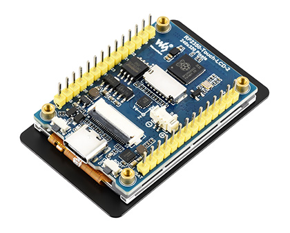
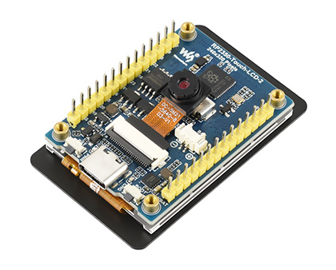

Assemble
Connect the camera, check that it scans, then press the board into the case. No tools. The camera's ribbon connector is the only fiddly part.
Not flashed yet? Flash the firmware first: it needs the BOOT button, and the case covers it.
-
Connect the camera
The camera's ribbon plugs into the long connector on the back of the board (the side without the screen). The connector has a black flip that locks the ribbon in place.

Before: the connector is empty. 
After: ribbon in, camera facing up. - Check that the flip is open, pointing up. If it isn't, pull it up with your finger.
- Plug the ribbon in with the camera facing up, so the gold contacts face down. It goes in from the side opposite the flip.
- Push the flip down to lock the ribbon.
Watch it being done (YouTube, starts where the camera goes in). In the video the black flip is on the other side of the connector than on the boards Waveshare makes today. The side the ribbon goes in from is the same.
-
Check that the camera works, before the case goes on
Plug the board in, open a screen that scans a QR code and point the camera at one. If nothing scans, unplug and reseat the ribbon as in step 1.
-
Press it into the case
Unplug first. Lower the board into the case with the screen up and the USB-C socket at the end with the opening. The lens looks out through the hole in the back. Press down until the board's four standoffs sit in their sockets and the glass lies flush with the case.
Assembled and showing the home screen?
Next: print backup cards →